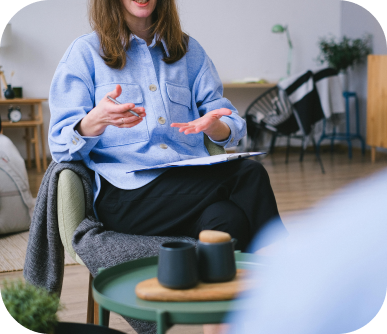
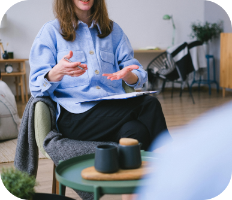

Мене звати Світлана Пруднік
Я — дипломований практичний психолог із 20-річним досвідом, консультант у методі позитивної Транскультуральної психотерапії (Н. Пезешкіана);
фахівець із гештальт-підходу, системної сімейної терапії,
роботи з психологічними травмами війни та втратами.
Кожна історія - важлива. Кожна особистість цінна.
Навчаюся на консультанта з психології здоров’я, на коуча зі здорового способу життя в методі позитивної психотерапії Н. Пезешкіана.
 

 
